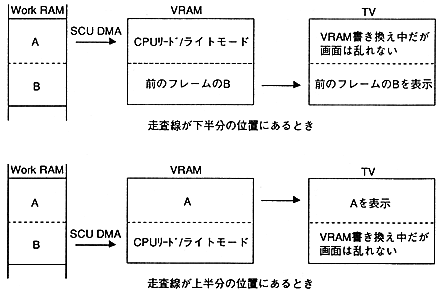

● Frame rate by display color
Movie compressed with Cinepak is created with 16M colors (24-bit color). When decoding this movie, convert it to 16 bits / pixel when playing in 32K colors (MSB is transparent bit, RGB is 5 bits each) and expand, and when playing back in 16M colors, 32 bits / pixel ( The upper 1 byte is for transparent bits and RGB is 8 bits each). In other words, the movie compression rate is the same (the movie data is the same) no matter what you play, and there is no problem as long as the transfer rate of the image satisfies (Formula 2.1) as described above.
However, when playing back in 16M colors, there is twice as much data as in 32K colors, and it is necessary to devise the transfer to VRAM, so it is necessary to lower the frame rate compared to 32K colors.
The frame rate depending on the display color varies depending on the content of the movie, but please refer to the following values.
①32K color, 320 × 224 size, 24-30fps
24fps or lower is appropriate to ensure image quality
②16M colors, 320 x 224 size, 15-18fps
〈reference〉
About 16M color reproduction
When playing back in 16M color using the scroll surface of VDP2, once frame data is expanded to work RAM, it is transferred to VRAM using DMA of SCU. As shown in Figure 2.4, the upper half of data is transferred to the VRAM while the TV scan line is in the lower half of the area. Next, the lower half of the data is transferred while the scan line is in the upper half area. In other words, VRAM is rewritten while being chased by the TV scanning line. These processes must be completed in 1 Vsync period, and transfer is performed at high speed using DMA of SUC so that it cannot catch up with the scanning line. Figure 2.5 shows the timing of data transfer to VRAM.

Figure 2.4 Image of data transfer to VRAM